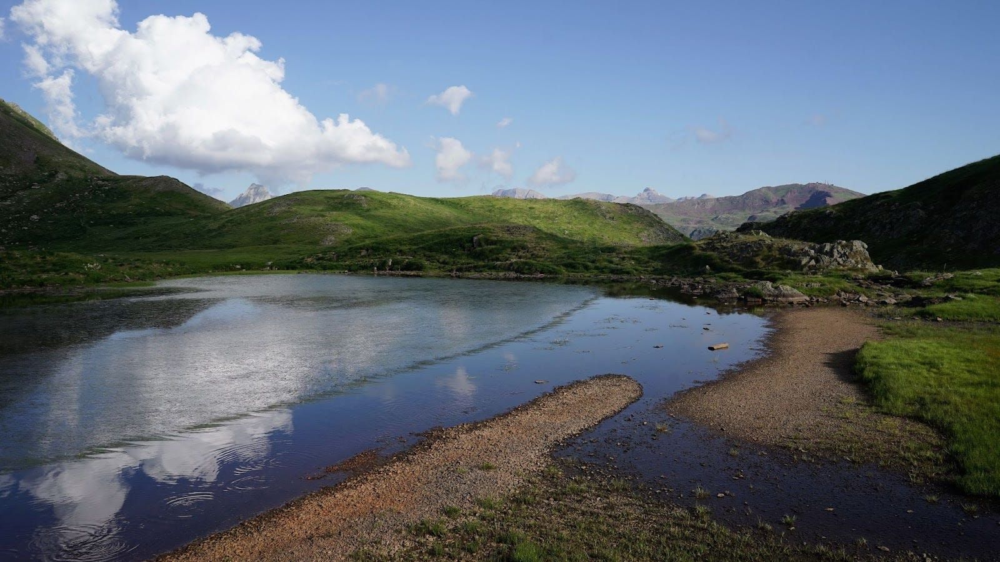

The Mystery of the Mountain Lake

The text below is a lightly edited machine translation of the original Polish.
Oryginał po polsku.
The Path
It’s a hot July day, but the path is shaded by beeches and oaks, and it’s much cooler here than in the fields. The climb is getting steeper. Daria adjusts her backpack and slows her pace. Her parents, Tomasz and Afarin, are walking a few steps behind her.
“How much farther?” she asks. They’ve been walking for a couple of hours, and Daria feels it in her legs.
“About seven kilometers,” Tomasz replies.
“So how long?” Daria presses, with a hint of impatience.
“It depends on how fast we go,” Tomasz clarifies. “At five kilometers an hour, it’ll take about an hour and twenty minutes. But if we dawdle, it could take two hours.”
“So dawdling would be about three and a half kilometers an hour—or roughly one meter per second?” Daria calculates quickly.
“Exactly,” Tomasz confirms.
“No rush,” Afarin interjects. “Let’s just enjoy the walk,” she encourages.
“Fine, let’s carry on,” Daria agrees and continues down the path, which climbs steeply uphill. “Until the summit.”
They press on uphill, following the red-and-white trail markers. There are no other people on the path, even though it’s midsummer and you’d expect some tourists. There are no animals either; they’ve all hidden from the heat in the forest’s nooks and crannies. However, there are hoofprints impressed on the mud.
“What kind of animal came this way?” Daria wonders. “A chamois?”
“More likely a roe deer,” Tomasz guesses. “As far as I know, there are no chamois in the Polish Jura.”
“Where do they live then?” Daria asks.
“In the higher mountains, like the Tatras or the Pyrenees,” Tomasz explains.
“For me, these Jura peaks are high enough,” Daria says. “Did you see chamois when you were in the Pyrenees?”
“Of course, there are quite a few there,” Tomasz replies, huffing as the path winds steeply uphill again. “And there are also lots of marmots.”
“Are they dangerous? Or do they just nap?”
“Marmots are just furry balls; no need to fear them. But in the Pyrenees, there are bears and wolves,” Tomasz adds. “Though it was another species that gave me the most trouble.”
“What kind?” Daria wants to know.
“That’s a long story. I’ll tell you… when we reach our destination,” Tomasz puffs. He looks back and sees Afarin walking at a slow but steady pace. They’re almost at the summit.
“پنج دقیقه استراحت کنیم1” Afarin suggests.
“Agreed. Who wants an apple?” Tomasz asks. “I have three.” They sit in the shade on a boulder and tuck into the juicy fruit.
“Only about another kilometer and a half to the village. We’ll be there in twenty minutes: now it’s all downhill,” Tomasz explains, studying the map.
“Could that dangerous species you mentioned be mosquitoes?” Daria suggests. “I heard that of all animals, they are the ones who kill the most people.”
“Haha, you’re right, those are very dangerous creatures. But in the high mountains, they’re not a threat—it’s too cold for them, especially at night,” Tomasz explains. “Let’s go. We’ll talk about mountain dangers when we arrive.”
“2بریم” Afarin agrees. Daria gets up and stretches. All three put on their backpacks and continue along the trail, which now slopes gently downward.
The Tavern
The path gradually turns into a country road and then into tarmac street. Along the street stretch farmhouses and orchards. The trio of hikers approaches an intersection and enters through a gate onto a courtyard in front of a large building. There’s a hostel, a sports shop, and a café with a sign that reads Knajpa.
“We’re here,” Tomasz says, opening the door to the tavern.
Inside, there are a few tables, a sofa, benches, and colorful country flags hanging from the ceiling. The walls are decorated with large black-and-white photos of the mountains. At a corner table, a few climbers are sipping beer. Daria stretches out on the sofa and starts studying the menu. Afarin and Tomasz take off their backpacks and join her. After a moment, the tavern keeper appears and takes their order.
“I’d like a lemonade,” Daria says.
“I’ll have a non-alcoholic beer,” Tomasz orders.
“And for you, ma’am?” the tavern keeper asks.
Afarin studies the menu for a second and replies, “I’ll have green tea.” A few minutes later, all three are sipping their drinks. Daria finishes her large bottle of lemonade in seconds: she’s always impatient with drinks, especially on a day as hot as today.
“Can I have another?” she asks.
“Maybe wait a few minutes, eh?” Tomasz suggests. “I’m going to arrange our lodging.”
“But you promised to tell us about that monster in the Pyrenees,” Daria reminds him.
“Well, yes. You know what? Instead of telling you, I’ll let you read my notes. They’ve got all the details. What do you say?” Tomasz asks.
“Great!” Daria exclaims. She’s always been curious about what’s written in Tomasz’s private notebook.
The Mask
Tomasz pulls out a worn notebook from his backpack and points Daria to a few pages filled with more-or-less legible handwriting.
“I wrote about the event right after it happened, during the trip. Good luck!” he says, handing Daria the notebook. He heads toward the counter, where the tavern keeper is bustling about. Afarin takes out her own notebook and begins writing in fluent Persian calligraphy. Daria settles more comfortably on the sofa and, after a few seconds, is already engrossed in Tomasz’s story.
The sky pours down heat. I feel the tense, sensitive skin on my neck: the sunscreen must not have worked well, and my skin is slightly burned. The dirt road joins the motorway here, and in the distance, I can see the intersection and buildings of Somport. This is a small town where, in summer, there’s almost nothing going on; in winter, it’s busy with tourists skiing. I reach the intersection of two wide roads. There’s a wooden building marked Cafeteria y Albergue AYSA. Around it, a few motorcycles and bicycles are parked. I walk through the porch into the cool interior. There’s no crowd, just a few tourists having lunch. I sit at a free table and look around for a power outlet to charge my phone. There’s one by the window, marked with a sign that says charging costs one euro.
After two days of hiking in scorching heat, I crave something light to eat. I order a tuna salad and a 0% beer. Three people are working here: an older man and two young men in their early twenties. One of them has a squint, lisps, and looks at me strangely. I’m not sure if it’s because of the squint or if he has something against me.
After about ten minutes, a cook comes out of the kitchen and places the salad on the counter. The older waiter asks the squinting man:
“¿Para quién es?3”
“Para el guiri,4” the squinting man replies. He means for the foreigner, using a slightly dismissive term for someone from Northern Europe. Now the waiter seems even more unpleasant to me. But the salad tastes great, and the cold beer gradually cools my fever—not a real fever, but that feeling of a body on fire.
Meanwhile, my phone is already charged. I call my family and spend a few minutes telling them where I am and what I’m doing. They’re also experiencing a heatwave up north. It’s time to leave; I need to reach the ibón (that is, the mountain lake) Escalar before dusk, which will probably take another three hours.
I pack up my phone, notebook, glasses, and close my backpack. The squinting waiter gives me another suspicious glance. I go to the restroom. I refill my water bottle and glance at my reflection in the mirror. A man with disheveled hair and a white mask on his face stares back at me. I touch my cheek, and so does the man in the mirror. The mask is just dried sunscreen. It’s a special sunscreen for children, designed to show which parts of the skin are protected. I’ve been using it all day, and now I see the effect. I chuckle to myself and say, “Maybe that squinting guy isn’t a xenophobe—he was just surprised by that white face like a Kabuki theater actor.” I sling my backpack onto my back and plunge into the scorching afternoon air.
The Thief
I walk down the sunbaked asphalt toward the Astún winter sports station, which in the summer season is an abandoned concrete wasteland. Waves of hot air rise and blur the image of the mountain slopes visible beyond the building and the parking lota. I leave this place and head toward the lake, where I plan to spend the night. The path climbs steeply along a gorge with a gurgling stream. I climb slowly: I’ve been on this Pyrenean hike for only about two days, and my body hasn’t fully adapted to the weight of the backpack.
After an hour, I encounter a hiker coming down and ask:
“¿Queda mucho para el lago?5”
“Sí, todavía te falta bastante.6”
We pass each other, and the distance slowly, step by step, decreases. I finally arrive at the lake around five in the afternoon. The lake is surrounded by flower-studded meadows perfect for camping. The water is cool but not icy, so I take off my sweaty clothes and immerse myself in it with pleasure. I swim to the middle of the lake and watch the panorama of the peaks surrounding the lake. Afterwards I rinse my teeshirt and spread it on the grass to dry in the fading heat. In the shallow water near the shore, I see lots of little fish. In a nearby stream, I spot a frog. In the distance, on the other shore, I note a few individuals of our own species: it looks like they’re having a picnic.
Just before eight, the sun begins to hide behind the mountains. I had set up my tent earlier, and then I’d walked around the area with my camera, taking some photos. Now it’s time to rest. I stuff my backpack under the flysheet (the waterproof outer layer of the tent), and crawl into the sleeping area, zipping it tightly to keep out insects. The tent lets in a lot of light, so it’s bright inside until dusk. I read for a while, then, exhausted from the long day, I fall asleep.
The tent shakes violently. Half-conscious, I don’t understand what’s happening: is it the wind? But no, I don’t hear any wind. Something—or someone—is tugging at it. I hear frustrated snorting. I fumble for my flashlight and shine the light toward the sound. A shadow play unfolds on the tent fabric. It’s hard to tell what’s real and what’s an illusion, but it seems to me I see the outline of pointed ears. The tugging stops, and the strange snorting fades away. I check my watch: it’s 10 PM. I unzip the tent and check its condition. It’s intact, but my backpack is half-pulled out and open. The plastic bag with my food supplies, which was inside, is missing. I check around: no sign of the bag. This could be a big problem. I put on my headlamp and carefully examine the area. Nothing. The thief cleverly pulled the food from my backpack and escaped without leaving a trace.
I have about five days of hiking ahead through remote, empty parts of the Pyrenees: no villages or shops to restock. Without food, I can’t continue. I wonder what to do. I wonder what—or who—that shadow with the pointed ears was. I crawl back into the tent. Now every gust of wind, every gurgle from the stream, every call of a night bird unsettles me and won’t let me sleep. Eventually, I doze off. The sleep is short: at some point, I’m woken again by the same snorting and the same shadow of pointed ears. I make noise and shake the tent: the intruder vanishes. Then I toss and turn for a long time, in a restless half-sleep, until the rays of the rising sun begin to penetrate the inside of the tent.
(Here the text breaks off. Daria puts down the notebook. Afarin looks at her questioningly. They start a conversation in Persian.)
“What a story,” Daria says.
“I’ve heard something about this, but I don’t remember the details. Did Tomasz lose his provisions?” Afarin asks her daughter.
“Not exactly lost. He had them taken from his backpack, which he stupidly left outside the tent,” Daria replies.
“Well, that wasn’t very smart. I suppose Tomasz should know better than to do that,” Afarin nods. “And what kind of creature was it, anyway?”
“Tomasz’s notes don’t say. Only that he saw pointed ears,” Daria informs her.
“Maybe it was an elf, then?” Afarin wonders.
“Oh come on, elves are fantasy,” Daria objects.
“You don’t find them in the lowlands, but who knows what might be in the high mountains,” Afarin muses, keeping a straight face.
“Give me a break!” Daria laughs. Tomasz returns and says the room is ready. They gather their things and climb the steep stairs to the second floor, to a room with three narrow beds. Daria tosses her backpack onto the one by the window and announces, “This one’s mine!”
Afarin lies down on one of the others. Tomasz leaves his backpack on the remaining one.
“I’m going to read a bit in the garden on the hammock,” he says, holding up a book about Kukuczka he found in the library downstairs.
“من میرم چرت بزنم7,” Afarin says, lying on her side and closing her eyes.
Daria takes out her tablet and keyboard from her backpack and follows Tomasz downstairs. She sits at a table and sets up the tablet.
“What are you going to write about?” Tomasz asks. “Our hike?”
“Maybe,” Daria replies evasively. She prefers not to discuss her plans at the moment.
“Good luck, then. Order something else if you want,” Tomasz says, leaving twenty złoty on the table and heading out to the garden with the book.
Daria asks the tavern keeper for another lemonade and the Wi-Fi password. This time, she sips her drink more slowly. She’s focused on writing. On the tablet screen, a stream of words grows.
The Feast
The day is scorching, and the two of us spend the hottest hours dozing in our den. It’s early summer, and more two-legs are starting to appear in the area. Usually, it’s easy to avoid them—they stick to their paths and are generally inactive after dusk. I suppose they’re afraid of the dark. Most of them arrive here via the path from the stone field. Then they sit by the water, dip their two legs in it, and make a racket. Some run up and down the hills around the lake in their unstable gait. I don’t understand what they’re doing. It doesn’t seem like they’re chasing rodents or other prey. They just run, wasting energy for no apparent reason, like puppies, even though they’re clearly mature individuals. Anyway, most of the two-legs leave the lake area before dusk. They head down toward the stone field and then even lower. But not all of them. Some spend the night here, and we sometimes benefit from that. Tonight is one of those nights.
It’s still light when I quietly leave the den so as not to wake my still-sleeping companion. I settle behind a bush and observe the situation in the meadow. Far away, on the other side of the water, a few two-legs are collecting various things they’d brought here. They load them into sacks, which they then attach to their backs. Now they’re heading down.
On the hill above the two-legs, two chamois stand. They’re also observing the sack-loading operation. I know them well; they’re locals. On this side of the water, it’s almost empty, but there’s one two-leg. A few steps from the shore, he’s set up his den. Unlike us, two-legs don’t dig dens in the ground; instead, they carry portable dens in their sacks. These dens come in various sizes and colors, depending on the individual. Sometimes two-legs sleep in them alone, sometimes in pairs, and sometimes a whole small herd fits inside.
The den set up by the two-leg today is small and green. He himself shuffles around the meadow with a small black box and observes the water, flowers, and other things. The box has a shiny surface on which the two-leg can make reflections of these things appear. He keeps at it until sunset. Then he crawls into his den and doesn’t come out again.
I emerge from behind the bush and set off to patrol my territory. I need to mark it, because intruders might show up. My meadow by the lake is a great spot, so I don’t want to lose it. I jog lightly along the base of the hills. I stop at key points and leave marks. Then I climb the slope to the top of the hill. From up high, I watch the shimmering surface of the lake, the crescent moon reflected in it. It’s getting darker, and I rely more and more on scent rather than sight. I head down toward the water and keep an eye on the two-leg’s den from a distance. There’s no sound from it: has he already fallen asleep?
I approach cautiously and circle closer in small steps, gradually drawing nearer to the green den. Now it’s almost completely dark. Only the stars and the moon shine in the sky. A gentle snoring can be heard from the den. So he has fallen asleep. I approach more boldly. I want to check what this individual has brought. Two-legs are omnivores and usually carry a lot of various foods with them. Sometimes, rarely, they have big fruit, much larger and juicier than the local berries. More often, they have dried fruits and various unusual nuts. You can also find carrion or a type of hard and pungent milk among their things. That’s my favorite treat. It tastes even better than a freshly caught vole, and it’s easier to catch because it doesn’t run away. And now I distinctly smell the aroma of hard milk. I can only hope the two-leg isn’t keeping it right in the middle of his den, because then it might be hard to get.
I sniff around the den: the smell comes from a sack the two-leg has pushed under the protective flap of the den. I gently tug at the edges of the sack and after a few minutes manage to widen the opening. Inside is a smaller sack, colorless like the water in the lake, and intoxicating aromas of hard milk mixed with the scent of other delicacies waft from it. I gently take it in my teeth and pull, but the opening is too small, and I can’t get it out. I tug harder. I hear the two-leg shift position. I freeze. The snoring resumes. I wait a moment longer, then yank hard. It works! The colorless sack of treats is free. I take it in my teeth and retreat toward my hiding spot behind the bush. A bright light flares up in the two-leg’s den. He’s now crawled out. On his forehead, he has that miniature sun that two-legs use to see in the dark. I suppose their eyes don’t work well in the dark. And I think their sense of smell isn’t great either, because their noses aren’t black and wet like ours; they’re faded and dry. Their ears are strange too: completely flat and immobile. I have no idea how they could possibly manage to aim them precisely at a vole scratching under the ground.
The two-leg checks his sack. He sees that the treats are gone. He straightens up and starts flashing his light around, walking around the tent. This is another mystery: do two-legs bring their food to us as offerings? My companion thinks so, because otherwise they’d just eat it themselves. I’m not so sure. If the food was meant as a present, why wouldn’t they leave it in a more convenient spot for us, instead of keeping it in their sack? It’s hard to fully understand the behavior of two-legs; they’re strange creatures.
I take the treats back to our den. My companion had already returned from his patrol. He’d gone to the other side of the water, but didn’t find anything interesting there. I show him the two-leg’s treats. We munch on them together. My companion also likes hard milk, but he’s even more fond of the two-legs’ strange nuts. After the meal, we wonder again why some two-legs come here to spend the night and why they bring so much food. I stay in the den, but my companion decides he wants to sniff around the two-leg’s den. He heads outside. The moonlight creates a pale glowing frame around his bushy tail and pointed ears.
Daria keys in the final period and stretches. She realizes Tomasz has been sitting at the table next to her for some time. She hadn’t noticed him earlier, absorbed as she was in her writing.
“So, how’s it going?” Tomasz asks.
“I think I know who you met by the lake in the mountains,” Daria replies with a sly smile on her face.